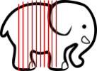

Ateliers
Coin Toss
Open-ended spec
Offing the off-site customer
Dessinateurs et spécifieurs
The Art of Agile - James ShoreElephant Carpaccio
Henrik Kniberg & Alistair Cockburn
Objectif : découper un projet en User-Stories.
Objectif 2 : prioriser ce backlog.
Objectif 3 : implémenter (coder !) les US.


la décision de découper ou non l'US ne sera limité que par la possibilité de couper ou non l'US
6 D
- Désirable
- Démontrable
- Découpée
- Dérisquée
- Définition de Fini
- Discutée (ou Débattue)
Retail calculator
3 entrées : Prix unitaires, quantité, état.
1 sortie : Prix à payer.
| order value | discount rate |
| $1,000 | 3 % |
| $5,000 | 5 % |
| $7,000 | 7 % |
| $10,000 | 10 % |
| $50,000 | 15 % |
| State | taxe rate |
| UT | 6.85% |
| NV | 8.00% |
| TX | 6.25% |
| AL | 4.00% |
| CA | 8.25% |
Marshmallow Challenge
Objectif
Faire une construction pour mettre le Chamallow le plus haut possible
- 1 chamallow
- 20 spaghettis
- 1m de ficelle
- 1m de scotch
- 18 minutes
Scrum From Hell
- Retard
- Trop long
- Téléphone, PC, montre
- Interruptions extérieures
- Trop de détails, résolution de bugs
- Discussions annexes
- Observateur "chicken" qui intervient
- Manager observateur qui met une pression silencieuse
- Problème "implicite"
- Reporting au SM, au Lead Dev
- Ne pas écouter les autres (préparer son tour)
- Couper la parole
- J'ai fait du Java
- Pas de programme en sortie
- Hier j'ai fait, aujourd'hui je vais faire
Poker / wall / extreme quotation